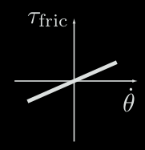
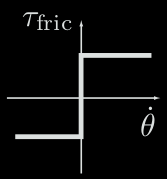
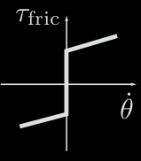
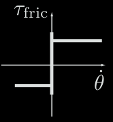
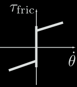
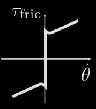

Other factors may contribute to the friction at a joint, including loading of a joint's bearings, time a joint has been at rest, temperature, etc. Friction in a gearhead often increases as the gear ratio increases.
$\tau_f$ or $\tau_f$ in the following sections refers to the torque that needs to be applied to overcome friction.
This is a

$\tau_f$ can take any value in $[−b_s , b_s]$ at zero velocity. $$ \tau_f = b_s \,\frac{\dot\theta}{|\dot\theta|} $$ $b_s$ is the coefficient of static friction.


To initiate motion: $|\tau_f| \geq |b_s|$
During motion: $\tau_f = b_k \, \frac{\dot\theta}{|\dot\theta|}$
$b_k$ is the coefficient of kinetic friction.
$b_s > b_k$

